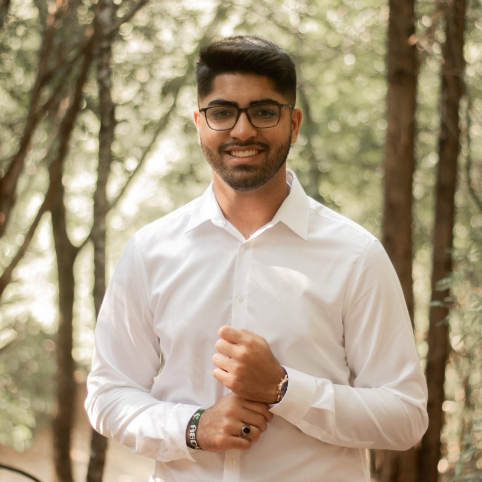

Abdullah Riaz

linkedin.com/in/abdullahriaz11/ - Dallas, Texas
Education
The University of Texas at Dallas
B.S. in Computer Science Academic Excellence Scholarship
Aug 2020 - Jul 2023
Relevant Coursework: Software Project Management, Software Programming, Database Systems, Advanced Algorithms and Design, Human Computer Interactions, C/C++ in the Linux Environment
Certifications: SAFe 6.0 Agilist — SAFe 6.0 DevOps Practitioner — SAFe 5.1 Advanced Scrum Master — Certified Google Project Manager
Work Experience
Technical Business Manager - Technology Development Program - AT&T
July 2023 - Present
- Led the rollout of the AT&T Guarantee program, overseeing the creation and management of detailed testing protocols to ensure high product quality and customer satisfaction.
- Orchestrated comprehensive testing strategies including Accessory Coupons, Reward Cards, and UX/UI Testing, improving the efficiency and accuracy of the testing processes.
- Directed the consolidation of 12 applications at AT&T, leading to significant reductions in operational costs and minimizing organizational technical debt.
- Streamlined the initial stages of application migration and retirement processes, enhancing project clarity and speeding up execution timelines.
- Developed and implemented a comprehensive training program using instructional videos to expedite the onboarding and proficiency of new staff in foundational project phases.
- Ensured effective collaboration and transition between project phases by coordinating with subsequent phase managers, maintaining project continuity and effectiveness.
- Played a key role in strategic project planning and execution, demonstrating leadership skills and driving initiatives that aligned with AT&T’s strategic goals.
Technical Product Manager - Ethos Group
June 2022 - Jan 2023
- Collaborated with cross-functional teams to gather requirements and design SharePoint user templates that aligned with business needs and objectives.
- Created and maintained interactive dashboards using Power BI, enabling stakeholders to gain real-time insights into key performance indicators and make data-informed decisions.
- Managed and led daily stand-ups with a team of three developers to ensure action items and features were being developed within two-week sprints in an agile environment.
- Utilized the Azure DevOps board to track project tasks, monitor progress, and facilitate seamless communication and collaboration within the team.
Leadership and Projects
Leadership in TDP - AT&T
July 2023 - Present
- Led TDP recruitment efforts as the primary interviewer for the Technical Business Manager role, significantly enhancing the selection process to ensure the recruitment of highly capable candidates.
- Served as Innovation Lead at the Dallas Headquarters, planning and organizing educational tours and company outings that improved integration and morale among new interns and employees.
- Enhanced the Microsoft 365 security framework by prioritizing and organizing tasks based on severity, improving operational efficiency and security measures, showcasing adept project management skills.
Scrum Master - Coffee & T - AT&T
July 2023 - Present
- Acted as Scrum Master for the ”Coffee and T” project, utilizing gamification to improve engagement and learning outcomes in coding practices, thereby enhancing team skills and project delivery.
- Oversaw agile project management as Scrum Master, facilitating daily stand-ups, sprint planning, and retrospective meetings to ensure project milestones were met and team dynamics were optimized.
Skills
Project Management:
Agile, Asana, AWS DevOps, Azure DevOps, Figma, Jira, Kanban, PowerBI, Scrum
Technical Skills:
C++, Java, Jira, JQL, PowerBI, PowerApps, Python, REST API, SQL, ServiceNow, Swift, Tableau